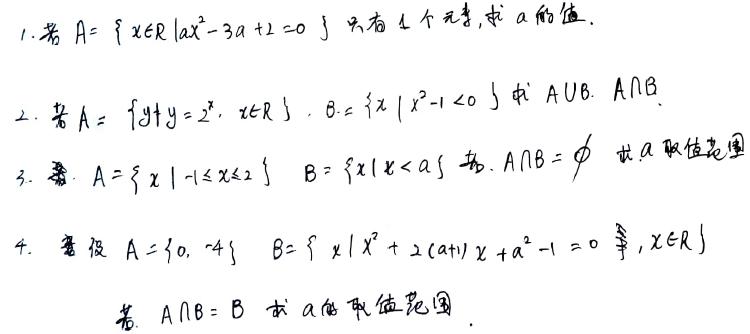
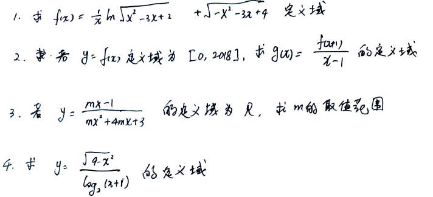
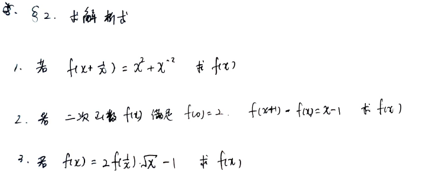
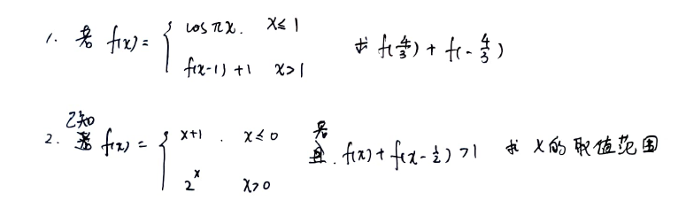
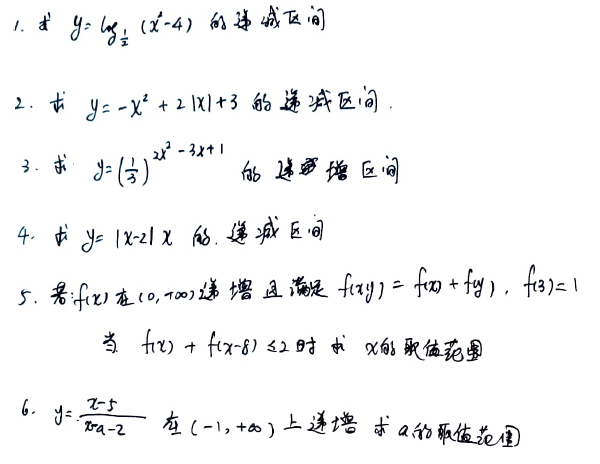
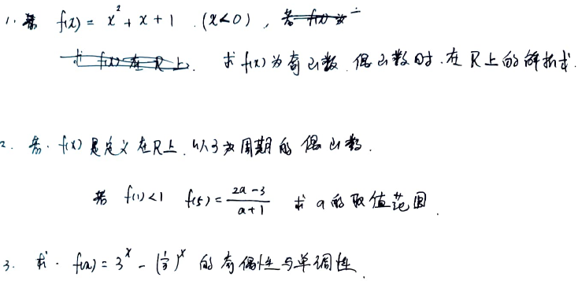
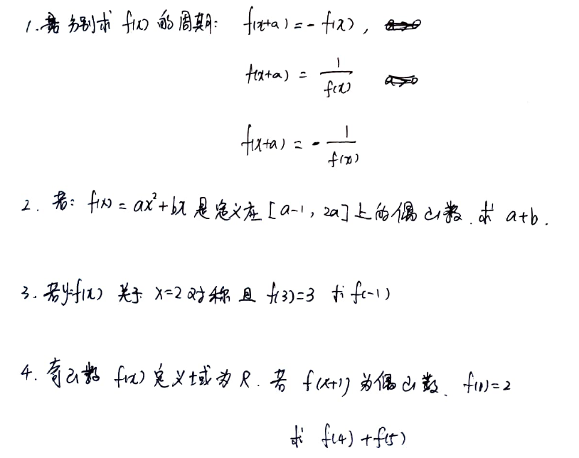

数学复习
0801 集合(1) 函数(1)
集合(1)
- 集合的表述方法
- 元素的特征
- 元素与集合的关系
- 集合与集合的关系 相等 子集 真子集
- 自然数集
- 全集 空集
- 集合的运算
- 区间
题目点评0801-1 集合

- 注意二次项系数的问题
- 指数函数的取值范围 图像是什么样的
- 取值范围能否去等要单独判断
- 集合题目需要特别注意空集的问题
函数(1)
- f是什么 自变量对应的函数值 定义域 值域
题目点评0801-2 定义域求解

- 对数函数的自变量取值范围是什么 图像是什么样的
- 略
- 同
0801-1-1 - 略
题目点评0801-3 求函数解析式

- 首先要理解代表一种功能, 是让括号内东西实现某种特定的变化. 有两种方法: 设t=括号内整体; 拼凑等号右面内容为括号内整体.本题适用后者方法.
若 求解 使用两种方法求解.
- 略
- 利用和的互为倒数的关系再构造一个等式方程组.
若 求
0803 函数(2)
基本初等函数(1)
- 指数函数 ,取之间和 的图像
- 对数函数 , 取之间和 的图像 分析为何与指数函数互为反函数, 如何通过关于对称画出图像
- 幂函数
函数变换(1)
- 分析为何与图像关于轴对称
函数奇偶性 单调性
- 奇函数公式 注意奇函数若在有定义, 一定是
- 偶函数公式
题目点评0803-1 分段函数

- 三角函数如何求解
- 关键点为 故分三段讨论
题目点评0803-2 单调性

- 特别注意
定义域的约束 - 当时,
- 略
- 同
0803-2-2 - 注意当函数单调递增时, 直接可得 故想办法把不等式两端变成的形式:
- 首先考虑
定义域的约束,分式的处理方法:拼凑法把分子的消去,之后根据递增考虑分式前系数为负数的约束
题目点评0803-3 奇偶性

- 通用的解法为设当为所求的取值范围时, 通过变换转化到已知的取值范围上
- 解决分式不等式的方法
特别注意等式两边同时乘以分母时可能变号, 方法一, 移项通分, 转化为乘法 方法二, 同0803-2-6, 消去分子上的后利用图像判断
0805 指数运算 对数运算
指数运算法则
略
对数运算法则
- 换底公式
- 加法 减法
- 真数和底数上下颠倒
- 提取真数与底数的幂
- 废话公式
- 是什么意义
题目点评 0805 指数 对数的运算 (节选)
1
注意ab正负
2
注意公式: 真数和底数上下颠倒
0807 函数变换 对称 周期
函数变换
- 对于,求经过图像变换后的: 向上(下)平移长度, 向左(右)平移长度
- 对于:求下列函数是通过什么变换来的:
需要自己结合实例分析上述函数变换, 例如
对称性 周期性
- 若关于对称, 列式
- 若的一个周期为, 列式
- 推导
- 若关于和对称, 求周期
- 若是奇函数, 且关于对称, 求周期
反比例函数图像的画法
关注定义域 消去分子中的自变量 并判断单调性
题目点评 周期

- 目标是推导,循环利用等式
- 奇函数和偶函数的定义域也是对称的
- 略
- 推导或画图像得周期为4. 注意奇函数中
All articles in this blog are licensed under CC BY-NC-SA 4.0 unless stating additionally.